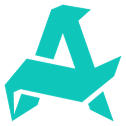

WO
woxic CS2 Crosshair

AuroraLast update:
Share code · Settings › Crosshair › Import
CSNKVaehG52BbGmbdDH9a36Xqa82mW7JrVQAGdNWfQZASc
Console · Paste in the CS2 console (~)
cl_crosshair_drawoutline "0"; cl_crosshair_dynamic_maxdist_splitratio "0.3"; cl_crosshair_dynamic_splitalpha_innermod "1"; cl_crosshair_dynamic_splitalpha_outermod "0.5"; cl_crosshair_dynamic_splitdist "6"; cl_crosshair_dynamic_spread_limit "227"; cl_crosshair_gap "4"; cl_crosshair_length "6"; cl_crosshair_recoil "0"; cl_crosshair_screen_height "960"; cl_crosshair_t "0"; cl_crosshair_thickness "1"; cl_crosshaircolor_a "255"; cl_crosshaircolor_b "129"; cl_crosshaircolor_g "50"; cl_crosshaircolor_r "255"; cl_crosshairdot "0"; cl_crosshairoutline_a "255"; cl_crosshairoutline_b "0"; cl_crosshairoutline_g "0"; cl_crosshairoutline_r "0"; cl_crosshairstyle "4"; cl_ironsight_dot_scale "1"; cl_ironsight_usecrosshaircolor "0"
About woxic's crosshair
woxic plays for Aurora. This is the exact CS2 crosshair woxic used in an official match on 17/10/2026, read directly from the match demo.
- Color
- #FF3281
- Length
- 6
- Thickness
- 1
- Gap
- 4
- Center dot
- No
- Outline
- No
- T-style
- No
- Opacity
- 100%
How to use woxic's crosshair in CS2
- Click Copy next to the share code.
- In CS2, open Settings › Game › Crosshair.
- Click Share or Import and paste the code.
Or copy the console commands, open the CS2 console (~) and paste them. More questions in the FAQ ›